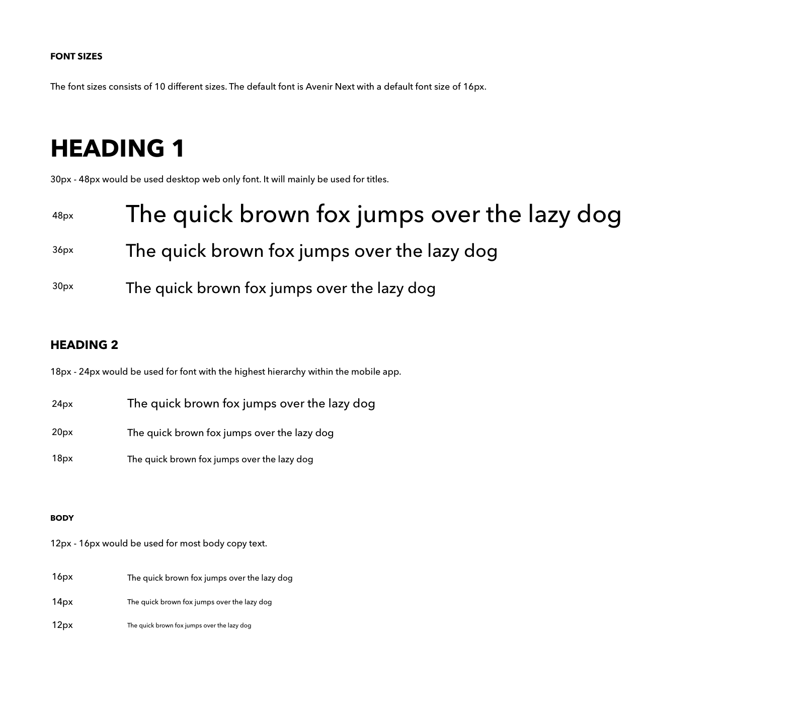

1.0 Context
1.1 Problem: Overcrowded Commute
Opportunities Discovery: Typical Commuter Journey
Mapping a typical commuter journey provided a base start to start the design process. Discovering pain-points gave opportunities for design interventions. We found that compiling quotes from online sources, such as Yelp Reviews and 1-on-1 Interview Participants, and merging it visually with the journey map helped the team to empathize easier with the target audience.
1.2 Quantitative and Qualitative Research
1.3 Target Audience Research
Method:
1-on-1 interviews with 5 participants
Participants Criterias:
+ Payment Methods (Metropass/Presto)
+ Type (Daily/Seasonal)
1.4 Insights
 Persona
Persona
Digging deeper into it, we found that when humans are densely packed, instead of getting to know and be nice to each other, people feel threatened.
So, what is socially acceptable and not, gets blurred, as long as they achieve their goal.
During this state, people either:
• Enter into an empty state of mind
• Find low cognitive distractions on their phone
• Be nostalgic of good times from their past
They do All of Those just to commute, EVERY. SINGLE. DAY.
The feeling of losing their personal space and lack of control of their environment is the main direct cause of stressful commute experience.
2.0 Challenge
2.1 Meaningless Experience
Commuters feel the time they spent during Overcrowding is meaningless towards their life, but they cannot not do it. This in turns make them feel meaningless, as if they have no worth at all.
HOW MIGHT WE
Give a meaning to the time commuters spent during their commute, in order to alleviate frustrations caused by ineffective transit system.
2.2 Socio-Cultural: 'Experiences', 'Features'
Current solutions to commute problems are products repurposed from its original function. Products that are created specifically for Overcrowding does not exist, regardless of the fact that it is a Macro Problem Space. We know that our solution would face a socio-cultural barrier when it got into the market. To prevent that, we chose to focus on making 'Experiences', instead of 'Features'.
We theorize that commuter's basic needs are already fulfilled by existing products and instead, by not focusing on 'Features', we could focus our core value proposition to fulfill their psychological and self-fulfillment needs.
Time Limit: 8 Weeks
Due to the given short time to create a fully functional MVP, we realized that we would have to do a precedence study and reverse engineer it to a product that solves our problem space to keep our funding. We would validate it through a limited beta testing of 100 participants to confirm the validity of our solution.
3.0 Strategy
3.1 Precedence Study: Pokemon Go
Because Overcrowding is also a spatial problem, there’s the possibility of solving the problem space by merging tangible experience with technology. So we looked at current successful implementation of AR by end users, Pokemon Go. We did an in-depth analysis of key experiences that are fundamental to its success.
3.2 Motivations
Deeper analysis of our target audience through Persona, we found that due to the liminal nature of commute experience, people like the idea of being able to see and own a proof of their experience. Our team believe that there is a potential for a digital product to help with that.
Motivations Analysis
3.3 Artifact: Photograph
Looking at the success of other moment-capture product (Instagram), we theorize that using the same artifact, Photograph, we could help commuters to create a meaning by giving them the tool to capture and store moments of their commute experience.
Big Idea
4.0 Deliverable - Minimum Viable Experience
Ideation Sketch
4.1 Usability Testing
We did 2 rounds of User Testing with 5 Participants each with a lo-fi wireframe to identify usability problems. The main usability problem was caused by the main navigation. Backtracking to the Task Flow, we found that we need to simplify the amount of choices in the 3D Map screen to limit visual attention competition.
4.2 Latest Version
Epics 1: Game
Within 8 Weeks, the team decided to focus on 4 Epics that are the core of the experience. We used quantitative and qualitative metrics from the User Testing to prioritize which part of the product experience needed improvement.
Epics 2: Redeem for Presto $
Within 8 Weeks, the team decided to focus on 4 Epics that are the core of the experience. We used quantitative and qualitative metrics from the User Testing to prioritize which part of the product experience needed improvement.
Epics 3: In-Game Shop
Within 8 Weeks, the team decided to focus on 4 Epics that are the core of the experience. We used quantitative and qualitative metrics from the User Testing to prioritize which part of the product experience needed improvement.
Epics 4: Mutantpedia
Within 8 Weeks, the team decided to focus on 4 Epics that are the core of the experience. We used quantitative and qualitative metrics from the User Testing to prioritize which part of the product experience needed improvement.
5.1 Invision Prototype
5.0 UI Spec
We made 6 sets of UI Spec for: Color, Typography, Grid and Layout Spacings, Iconography, Buttons, and Content Component. To simplify the process, our team created an Atomic UI System. This will provide a concise organization system for any prospective team members to seamlessly contribute right away to our team. The system will be an on-going system documentation of the product.
5.1.1 Atom: Color
5.1.2 Atom: Typography

5.1.3 Atom: Spacings
5.1.4 Atom: Iconography
5.1.5 Atom: Motion Interactions
5.2.1 Molecules: Layouts
5.2.2 Molecules: Buttons
5.3.1 Templates: Content Component
5.4 Visual Identity
5.4.1 Mascot Character Design
Coming to this project, none of our team member had ever designed any characters at all. Through a user-centred design process, anything is possible. Since Mascots and NPC(Non-Playable Characters) in games are part of the atmosphere and mood of the game, we started the mascot character design with a character background story.
Pascal, a 23rd century Research-Bot are tasked to compile a database of Mutants.
A time-travel accident happened and the bot arrived with only his face.
5.4.2 Wordmark
I re-used the same grid generated by mascot character to keep a consistent proportion amongst all graphic elements. I started the wordmark exploration using primary font family, Avenir Next, in Bold.
5.4.3 Lifestyle Branding
6.0 Reflections
What I Learned
1. Test Early, Test Often
The result of the first User Testing blew our mind. I did not realized that I had so many assumptions when designing the navigation flow. Instead of focusing on the players, I got overwhelmed by the deadline. Fortunately, I was able to stick to our schedule and test it early enough that I could make improvement to the experience.
2. Daily Assumptions Discovery
Because I was making a product that is serving a Macro Problem Space, I found that I also have a macro scale assumptions. To prevent any bias during the design process, I spent 10 minutes daily to make a list of any assumptions that I realized that I was making after a good night sleep.
Next Steps
1. Validate and Iterate
The latest prototype version has yet to be tested. So, the most crucial part to proceed would be to validate that version first before starting the next iteration.
2. Character Design
With over 10,000 characters, 8 Weeks was not enough to design all of them. If the right opportunity comes up, I would like to go back and design at least 1% of them. If I design 1 character a day, it would take me around 33 years to fully design all of the character by myself.
3. Other Seasons
Because it is an MVP, the other 3 seasons: Spring, Summer, and Fall, have yet to be designed. So, in the next forseeable future, I would be going back and designing it.